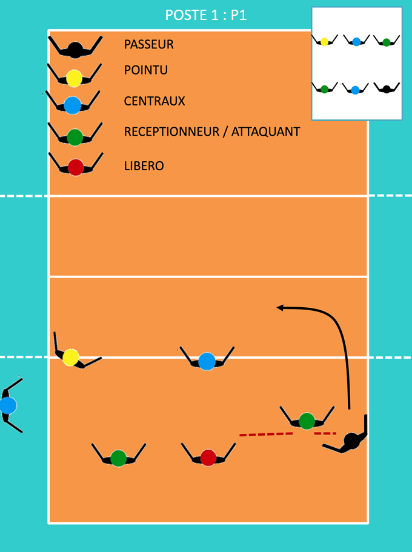
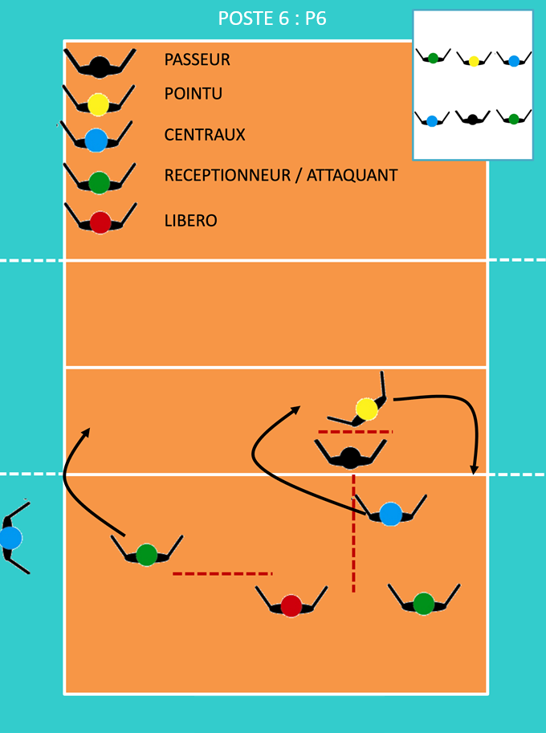
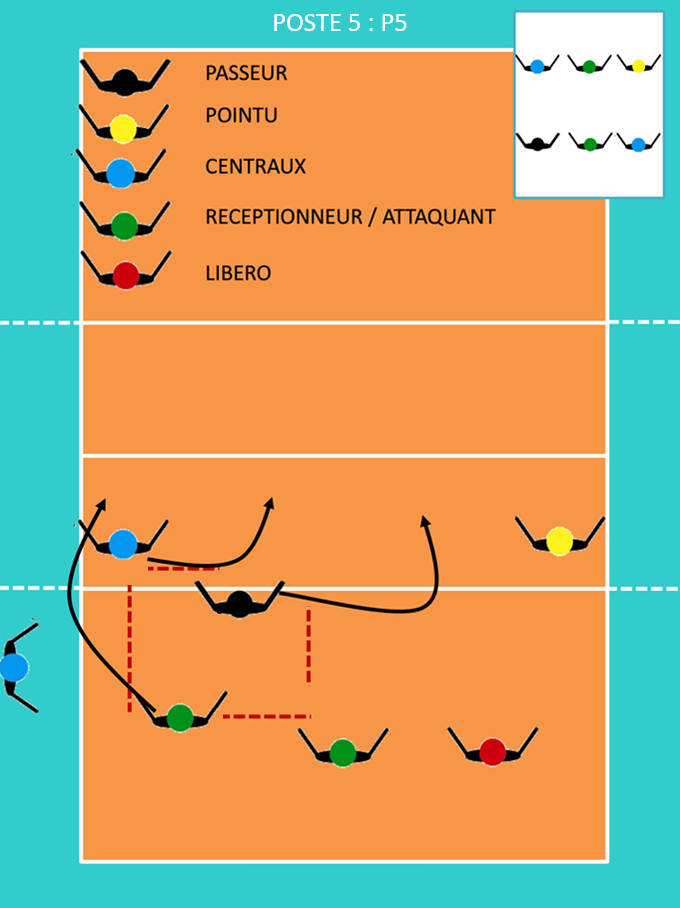
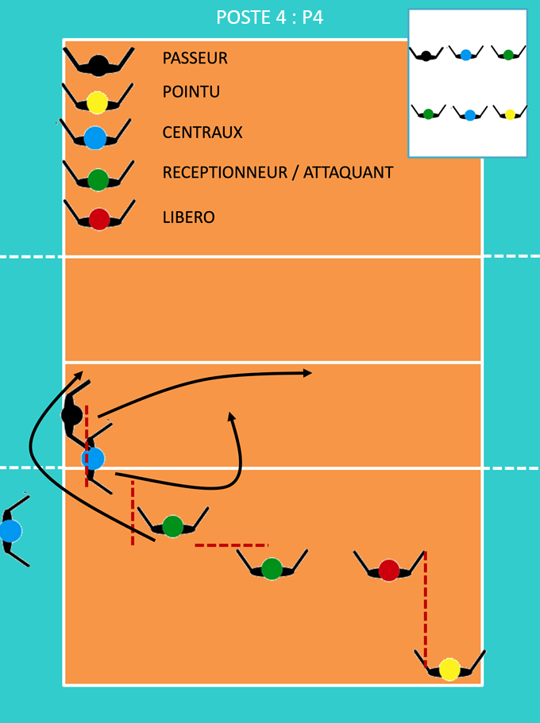
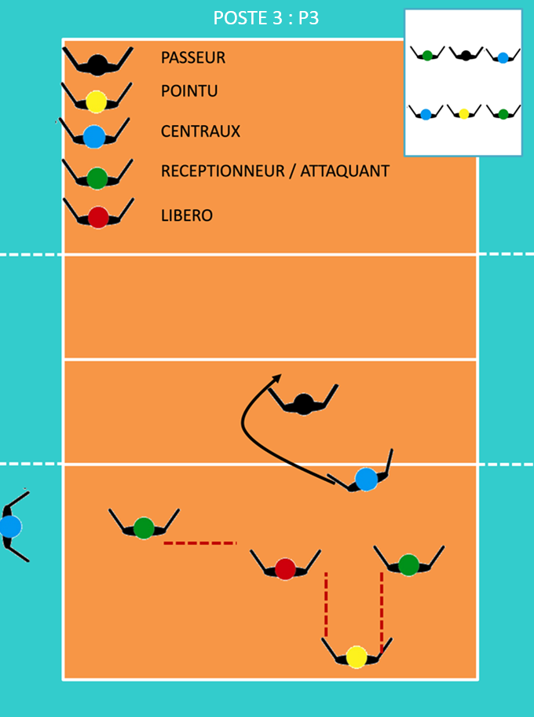
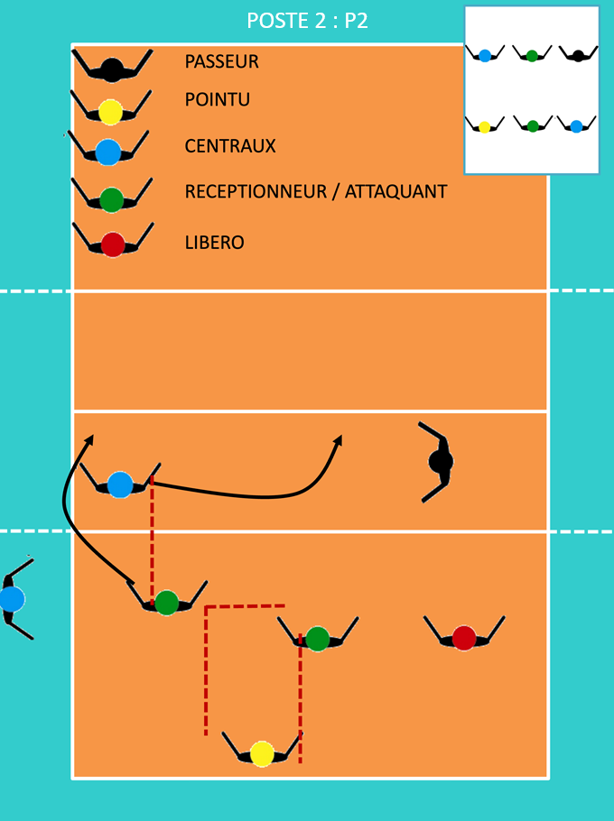

Sur les schémas, la tête rouge du libéro remplace le central arrière.
Position P1 : Le passeur est en position arrière droite. Il doit se préparer à courir vers le filet pour une passe dès que le ballon est servi. Les autres joueurs se positionnent pour la réception, prêts à couvrir les zones de service adverses. Le Réceptionneur attaquant (R4) qui est en position avant droite redescend pour couvrir le passeur tout en gardant le passeur légèrement derrière lui.

Position P6 : Le passeur est en arrière centre. Afin de lui permettre de gagner du temps il monte jusqu’a au pointu en restant toujours entre le libéro et le R4 arrière. Pour aider la réception le R4 avant, sur cette rotation, redescend pour la réception et se libère pour aller attaquer le plus rapidement possible.

Position P5 : Le passeur est au fond à gauche, se préparant se positionner pour la passe, il peut avancer en veillant à rester derrière le central en position avant gauche et à gauche du R4 arrière. Les joueurs de réception couvrent les zones de service. L'attaquant en position centrale avant recule pour la réception, en veillant à rester à droite du central en position avant gauche et devant le R4 arrière.

Position P4 : Le Grand Escalier. Le passeur est en position avant gauche. Le R4 avant vient se placer en réception à gauche. Attention à sa limite central avant/R4 arrière.

Position P3 : Le passeur est maintenant devant au milieu. Les joueurs s’ajustent pour permettre au passeur d'être en position et au pointu d'être protégé de la réception. C'est surtout l'attaquant en position avant gauche qui recule en réception.

Position P2 : Le passeur est en place . L'attaquant en position avant centre recule pour prendre la réception, attention à être à droite du central et en avant de sont attaquant arrière.
